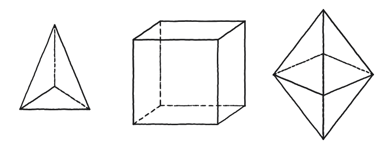
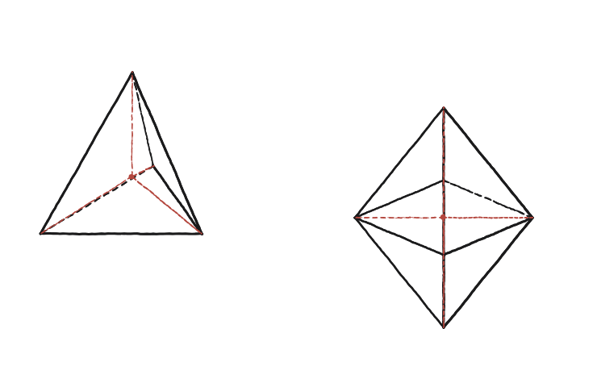

Quins són els volums dels sòlids platònics? I els d'altres poliedres simètrics?

Què hem de produir
No cal trobar els volums dels cinc sòlids platònics un per un: n'hi ha prou de resoldre'n un (o dos) de manera que el mètode sigui evidentment el mateix per als altres tres.
Parteix-lo en peces que ja se sap mesurar
S'uneix el centre del sòlid amb el centre de cadascuna de les seves cares. Quantes peces en surten, per a un tetràedre? I per a un octàedre?
La construcció
El tetràedre i l'octàedre, cadascun partit en piràmides des del seu centre —el mateix nombre de piràmides que de cares.

Tancar-ho
Cada peça és una piràmide amb base una cara del sòlid i alçada l'apotema del sòlid —la distància del centre a una cara. El volum total és (nombre de cares) × (1/3) × (àrea d'una cara) × (apotema), que es pot reescriure com (1/3) × (àrea total de la superfície) × (apotema).
El volum de qualsevol poliedre regular (i, de fet, de qualsevol poliedre amb un punt equidistant de totes les cares) és (1/3) × àrea total de la superfície × apotema.
Comprovació
Tetràedre d'aresta 1: apotema ≈ 0,204, àrea total ≈ 1,732 (4 cares equilàters). Volum ≈ (1/3)(1,732)(0,204) ≈ 0,118 —coincideix amb la fórmula coneguda s³/(6√2).
Aquesta fórmula "(1/3) × superfície × apotema" no fa servir enlloc que el sòlid sigui un dels cinc platònics: val per a qualsevol poliedre que tingui un punt equidistant de totes les cares —la mateixa generalització que ja funciona per a l'àrea d'un polígon regular via triangulació des del centre.